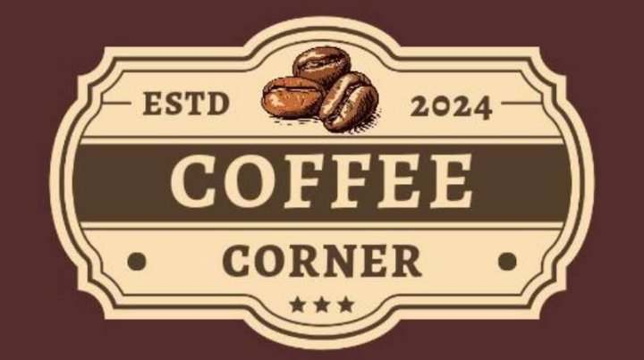

Welcome to the Coffe Corner Website, offering an amazinng coffee experience and friendly services
in the land of talented people around the Pinagtung-ulan Sanjose Batangas.
We are available for weddings, individual and business events, athletic events, festivals, and community markets.
The Coffee Corner website
Coffee Corner was formed in 2020 by Macalinao Renz, Laylo Zaira, and Orense Mikhaella with the goal of creating a pleasant and friendly environment for coffee enthusiasts. The founders, who are passionate about quality coffee and community engagement, set out to create a one-of-a-kind coffee experience that goes beyond a beverage. Coffee Corner has evolved into a cherished neighborhood destination recognized for its unique blends, welcoming atmosphere, and dedication to supporting local artists and farmers. T oday, Coffee Corner remains a popular venue for coffee enthusiasts and social gatherings alike.
Welcome to Coffee Corner, where each cup tells a story. Dive into our menu, which features aromatic blends and rich flavors that have been prepared to perfection. From traditional favorites like espresso and cappuccino to decadent specialties, we offer something to fulfill any coffee lover's craving. Join us as we create your perfect cup of bliss.
You may place an order right here at Coffee Corner! Whether you want a speedy pick-me-up or a leisurely sip, simply let me know your preference, and I'll brew it fresh for you. Please take a time to review our menu, and when you're ready, I'll gladly assist you with your order. Your ideal cup of coffee awaits!
GMAIL: Coffeecorner@gmail.com
PHONE#: 09482845891
facebook: coffeecorner